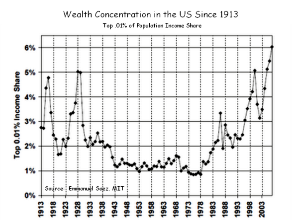

【美国】富豪口袋里的国家
2014-12-16 05:15:00
原文网址：https://blog.udn.com/MengyuanWang/108908682
1929年的金融危机虽然因为当时的经济学理论太原始（凯因斯还没有成大名），而且联储会（Federal Reserve Board）主席Roy Young和Eugene Meyer没有柏南克（Ben Bernanke，参见前文《美元的金融霸权》）的水平，以致政策反应失当，把经济大衰退恶化成大萧条，但是长期来看，美国民意因此集体向左转，在1932年终结了共和党多年来主宰白宫的局面，选出了二十世纪全人类的头号枭雄小罗斯福为总统，不但在四任任期之内就确立了美国的全球霸业，让欧洲列强永世不能翻身（详见前文《美国的欧洲战略史》），而且在国内大幅扩张联邦政府的组织和功能（即所谓的“New Deal”，“新政”），强力地抑制了富豪资本家对美国经济和社会的控制，为美国在1940、1950和1960年代的全盛时期垫下了坚实的基础。
这是美国最富的千分之一人口所占的总财富比率。大规模的全面战争，尤其是像一次大战和二次大战这様全民征兵的事件，有助于打破富豪阶级对财富的垄断。这是因为军方接管工业资產，利上滚利的过程被打断，而且富家子弟服役期间也没有閒情来扩展自己家族的商业帝国。不过如果没有政策上的积极管制，资本家族在战后七八年内就可以恢復原有的独占局面，如图中曲线在1920年触底后，到1928年就回返旧有的峰值。而罗斯福的新政起于1933年，后来虽然有四年受益于二战，其后却仍能长期确保均富的局面。图中的曲线值在10%左右停留了30年之久，在1960年代末期詹森总统的“Great Society”（“大社会”）福利政策之后，甚至降到8%以下。
1970年代开始的富豪大反扑，是美国政治、经济和社会上全面退化的枢钮。上图中富豪所占的财富比率直线增加，只是表面的第一层结果。挖深下去，我们可以发现它的原因是“新政”和“大社会”从雷根任期开始被逐步转返（Rolled Back），后来连民主党总统任期内，这过程也一直持续下去，这种政策方向的改变就是第二层现象。再挖下去，其原因则是植根于贪腐的合法公开化和游说工业的建立，使政策的主控权被富豪阶级牢牢地握在手里，这是第三层现象，也是连民主党总统都追求“自由化”的根源。但是美国的民主制度是有经常性选举的，其眾议院两年一次的选举周期之短，是全球罕见的，富豪掌控政权剥削中產阶级，虽说有技术上的原因（如我在前文《从期中选举看美国民主》解释过的Gerrymandering），选民怎么能长期容许这様公开大规模的胡搞乱搞呢？这就靠美国人最擅长的宣传战了，只是忽悠的炮口是转而对内，所以宣传战是第四层的逻辑原因。而我在前文《美式经济学是骗人把戏的又一表徵》所提到智库和经济学界，还只是美国忽悠工业上游的一部分。先进的娱乐业，如电影、电视和电动游戏则是在侧翼麻痹群眾的辅助工具。真正最重要的主体还是在于大眾新闻传媒。而今日的美国大眾新闻传媒，有超过90%是掌控在六家跨国公司的手中（30年前，要一直算到第50家公司才有90%的市场份额。这6家公司是GE，Fox，Disney，Viacom，Time-Warner和CBS），这六家公司虽然政党倾向各有不同，为富豪阶级的利益服务却是枪口一致、义无反顾的。其结果就是美国公民多数迷信“自由经济”，对政府极度不信任，认同了雷根 “Government is the problem!” 的谬论；但是如果多数选民已经相信所有的政府都是坏的，那怎么有可能选出好的政府呢？而没有了强力而且独立于资本家的政府，那要到哪里去找制衡富豪阶级霸权的力量呢？
如果你从前一张图觉得美国贫富不均只是回到一百年前的水平，请看看最富的万分之一人口所占的财富比例。在2005年就已经创下歷史新高，到现在早已深入现代工业国家从所未见的地步。
四天前，美国国会又面临了拿不出预算，使联邦政府频临关门的窘境。在最后一晚，他们勉强通过了一个紧急预算，把问题推到明年。不过大多数人没有注意到，夹带在预算法案中，有一个小小的条款；它废除了2010年Dodd-Frank法案的核心要求。什么是Dodd-Frank法案呢？在2008年金融危机后，美国政府投入了几千亿美元来拯救已实质破產的所有主要银行。当初捅出这个大漏子来的大银行们，没有一个高级主管被关。最糟糕的几个总裁被强迫退休，不过平均的退休金大约是每人两亿美元。财务情况较好的，如高盛和摩根大通，它们的总裁继续当到现在。欧巴马政府唯一亡羊补牢的措施，就是Dodd-Frank法案。可是金融界的游说能力太强了，以致Dodd-Frank法案比起大萧条后亡羊补牢的1933年Glass-Steagall 法案（从1929年拖了四年，才等到小罗斯福上任主导通过；后来在克林顿和小布希任期被逐步废除，直接导致2008年的新危机），有如一个婴儿和世界健美先生的对比：两个都是人模人様，可是实际上的能力完全不是一回事。Dodd-Frank法案虽有几千页，其实只有一个改革有真正的意义，就是所谓的Volcker Rule。这个条款要求银行在炒作市场的时候，必须用他们自己的銭，而不是客户给他们的存款。所以如果他们再次搞到频临破產，至少联邦政府在考虑是否用纳税人的銭帮他们买单的时候，不须要担心无辜的客户。（一般的零售银行对私人存款户自动有联邦的FDIC保険，不过FDIC有很多限制：1）每户上限是十万美元，2）FDIC自己也有破產的可能，3）FDIC只保零售银行的Savings Account，投资银行的那些动辄十亿、百亿的帐户是完全没有正式保障的，虽然歷史上联邦政府一向还是买了单。）
说了这么多，希望读者还看得下去。不过金融这种虚拟的东西，天生就是复杂。我用一两个段落来解释这件事，已经是人力的极限了。好吧，言归正传，那美国国会搞了什么把戏呢？他把Dodd-Frank法案里的Section 716废除了，Section 716是Volcker Rule里针对SWAP（掉期交易）的条款。而SWAP呢，则是金融衍生工具（Financial Derivatives）里最重要、最基本、最常用、也是最邪恶的一种。只要通过SWAP，其他的生意都可以做到帐外，所以只要去掉Section 716，所有的金融產品从股票、债卷到房地產，银行都可以用客户的銭来玩，使整个Dodd-Frank法案形同虚设。也就是如果Volcker Rule是Dodd-Frank法案的心臟，那么Section 716就是Volcker Rule的冠状动脉，结果共和党议员就这様子把它一刀割断了，而且废除Section 716的新条款是花旗银行帮他们代笔写的，由摩根大通的总裁亲自打电话给议员们催票（参见这篇华盛顿邮报的文章：http://www.washingtonpost.com/blogs/wonkblog/wp/2014/12/11/the-item-that-is-blowing-up-the-budget-deal/；华盛顿邮报是亜马逊老板Jeff Bezos的私人玩物，不受六大传媒集团控制）。欧巴马居然也支持这个新条款；不过老实说，如果他指望和克林顿一様，在退休以后每周都有大公司花25万美元请他演讲，那么就不能得罪大公司背后的资本家们。
这様赤裸裸地强奸公共利益，就是现代美国自由民主政治的常态。美国所谓的自由，包罗万象，就是不包括金銭财富上的自由，结果只是变成让富豪不受政府制衡的藉口。所谓的民主权利，也包罗万象，就是不包括民眾拒絶谎言的权利，结果只是变成既得利益集团阻止改革的手段。这様的自由民主，在歷史洪流下被淹没淘汰，只是时间的问题；而我个人只能希望能拖到小孩在这里过完好好的一辈子。可笑全球无数的民主斗士们，受了美国宣传战的蛊惑，还在作他们的自由民主迷梦。蠢蛋们要想自杀当然是他们自己的事，但是透过街头斗争（如乌克兰、香港和台湾）或选举变法（如台湾）以强加他们愚蠢的教条在整个社会上，那就是对自己同胞的无情大屠杀（参见前文《政府的第一要务》）。有良心的人是不该置身事外的。
【后注】今天（2015年五月18日）看到观察者网访问美国人Tyler Cowen。他是《Great Stagnation》（《大停滞》）的作者。他发现美国在1970年代之后，社会发展基本陷于停滞状态。不过他想像出来的解释十分可笑，说是一方面简单的进步（Low-Hanging Fruits）都做完了，另一方面科技发展进入高原期（他不知道电脑和手机吗？！）；当然真正的原因是财阀的掌权，请参见我写的《大停滞》。
2 条留言
"只要通过SWAP，其他的生意都可以做到帐外，"
杰米·戴蒙亲自怂恿着要通过支出法案中的衍生性金融商品条例
华盛顿邮报 2014年十二月11日 Steven Mufson 及 Tom Hamburger 撰
奥巴马总统和其党团成员间在周四所爆发的严厉衝突主要是关于一份具1600页的政
府融资法案中的关键条文：可否允许银行以纳税人的钱进行风险性的投资？对很多
国会山庄的民主党而言那是一个可恶的想法。有些人震惊于白宫竟会放任而无作任
何修正地支持这一法案，因为它将抹去 2010 年多德-弗兰克( Dodd-Frank) 金融改革立
法中的重要条款，乃是奥巴马所签署通过的成就之一。也许更令民主党人愤怒的，
助手们说，是法案中的用语显然是直接来自全国最大几间银行的说客的文笔。熟悉
这项工作的人士认为，该条款对那些公司的利润如此重要，以致于摩根大通的首席
执行长杰米·戴蒙（Jamie Dimon）亲自致电每一个立法人员敦促他们投赞成票。白宫
在诉求民主党支持这一法案时解释说，这会获得一些回报：它能避开其它会削弱
「多德-弗兰克华尔街改革暨消费者保护法」修正案，而保护消费者金融保护局免受
共和党人的攻击，并使「证券交易委员会」和「商品期货交易委员会」的资金赚得
两位数字的增长。白宫发言人乔许·厄尼思特( Josh Earnest) 说：「总统很高兴。」
厄尼思特谓，民主党人对这叙述感到不安「该综合法案中的这一特定条款将会削弱
掉『华尔街改革法』中的一项规定，总统不支持该一条款，但整体考量来说，总统
认为这个妥协方案值得他支持。」但「这一条款」并非仅仅是普通的规定，它直指
多德-弗兰克改革法的核心，因为它将允许大银行利用联邦政府保证的基金，亦即
纳税人的钱，直接进行投机活动。综合拨款法案将通过撤销「华尔街改革暨消费者
保护法」的规定，而那规定在于命令银行把最具风险的活动（如违约互换，大宗交
易商品的贸易和衍生性商品的买卖）转移到新实体去，以便「联邦存款保险公司」
可保证存款户不致有危险。眾院少数派领袖南希·佩洛西(Nancy Pelosi)指出，该项目
就是她会投票反对自己的总统所支持的法案的主要原因。她说道：「我所说的是：
纳税人不应承担风险，」她表示这修正案是「 回到老样的共和党公式：将收益行私
有化，将风险行国有化，若你成功了，则掉进你的口袋，若你失败了，则由纳税人
支付买单，这是不对的。」不仅是自由的国会民主党人对议案的变革表示强烈反对，
一位前奥巴马高级财政官员说，「这真是太可耻了，」他为维护业务关系要求匿名
发言。 「这是危机的震央，这就是导致 AIG 下跌、导致雷曼兄弟(Lehman Brothers)
垮台的核心。」
全国最大间的各行库，由花旗集团(Citigroup)、摩根大通(J.P. Morgan)和美国银行所带
领的银行团 - 正在游说变更多德-弗兰克（Dodd Frank）(华尔街改革暨消费者保护法)
法案，该法案曾允许他们有数年的调整期。代表银行的贸易协会，金融服务圆桌议
会(Financial Services Roundtable) 以及美国银行家协会(Amrican Bankers Association) 亦都
强调，区域性银行亦支持此一变革。银行长期以来一直争论说，多德弗兰克的条款
将限制其向客户提供信贷的能力，并且设立独立的实体从事衍生性商品和大宗货品
交易是不实际的。 ABA的高级游说者，国会关系和政治事务执行副总裁詹姆斯·巴伦
廷（James Ballentine）在一封电子邮件的声明中表示，要求银行将一些掉期交易转到
独立分支机构进行的做法「使得从家庭农场到能源公司一系列產业的营业，在因应
货品价格变动而作对冲操作时，无法进行採购。」
但是，前国际货币基金组织首席经济学家亦是麻省理工斯隆管理学院的教授西蒙·约
翰逊(Simon Johnson)表示，法规上的改变亦会增大各大银行的利润，这是为何他们如
此用力施压欲令其通过。约翰逊说：「这是因为有很大把的金钱岌岌可危，」他表
示：「他们希望能够承接巨大的风险让他们获得嬴的一面，但纳税人则必须承担可
能发生输的一面。」约翰逊说，多德·弗兰克修正案只影响了一小部分衍生性商品。
「我不愿指一说十来危言耸听，」他说道。但他补充表示「从长远来看，这可能会
变得非常巨大。」
制作这种话语的声势已行之有年。这种现象最早是出现在2013年要求放宽规则的
「房屋法案」，其中有部分的用语是来自主要银行团所撰写及编辑而被嵌入法案
中。花旗拒绝评论其说客们在制定立法时扮演的角色，其开始是被「纽约时报」
所报导的一封电子交流邮件中所披露。然而，在 2013年有一篇由银行全球公共事
务负责人撰写的博客文中却提到，欲修改多德-弗兰克法案这部分条款的努力是
「在產业与国会之间如何齐心协力寻求共同点的一个绝佳范例。」
自来银行的游说团体在华盛顿就具有强大的势力。可藉修改法规而获利的银行团
们 --- 花旗集团和摩根大通 ---- 是周旋于华府最具影响力的企业，比如说，根据响
应政治中心(Center for Responsive Politics)所整合的数据显示，这两家公司近年来每
年都花费超过500万美元进行游说，他们都位列前 90名游说支出的公司。此外，
摩根大通于2012年给联邦候选人与政党的捐助超过了500万美元，而花旗集团在上
一届的选举中捐助了 260 万美元。两家公司与国会山和白宫之间都有极密切的联
繫。例如，花旗的说客团就包括了前眾议员鲍勃·利文斯顿(Bob Livingston)和前参议
员约翰·布雷克(John Breaux)和特伦特·洛特(Trent Lott)。
前眾院金融事务委员会(House Financial Services Committe)主席巴尼·弗兰克(Barney
Frank)周三也呼吁他的前同事们驳回这项综合拨款法案。他指称那被嵌入法案的
修正条款是「一个实质上的错误，糟糕地违背了这个复杂又重要的题旨所须遵循
的程序，同时创下一个可怕的先例，为进一步攻击我们为了稳定金融所作的防卫
提供了路线图。」弗兰克补充道，「讽刺的是，那就像一个不相关的附加小条文
被毫无异议地放进一个庞大的法案中，而使该法案瘫痪原本的功能，对于那些极
可能会造成灾难的衍生性商品交易无法约束管制、亦无法追究责任。」他说，人
们对于衍生性商品的最佳规范方式可能会有不同的意见，但要达到最佳规范的方
法绝不是「在跛脚国会最后的日期中，在无听证会、无重修订时机、无公开辨论
的情况下，把非相关的修正条款安插到庞大的法案内。」